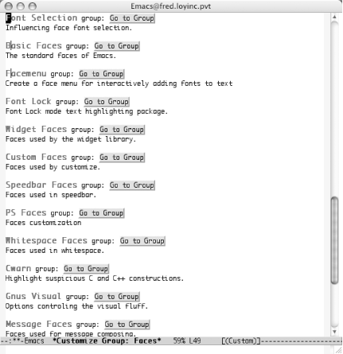
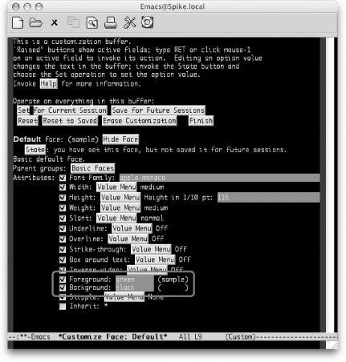
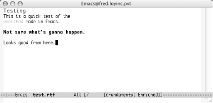

|
|
< Day Day Up > |
|
10.3. Modifying Fonts and ColorsEmacs on certain platforms (Windows, Mac OS X, and Unix) can display text in multiple fixed-width fonts. It doesn't yet handle proportional-spacing fonts well, although future releases are expected to address that issue. Emacs can display text in as many combinations of foreground and background colors as your system supports. We'll take a look at your options for changing fonts. You can make quick, interactive changes in any buffer. You can also customize the fonts and colors used by automatic highlight features such as Isearch and font-lock mode. And just in case you want to use Emacs to edit rudimentary styled-text documents, we'll also look at how to save and load files that have font and color enriched text. 10.3.1 Changing Fonts InteractivelyBoth Custom and the Edit menu in Emacs provide you with a way to change the current font and color by picking a new one from the Text Properties menu. To understand the Text Properties menu, you'll find it useful to know that Emacs thinks internally in terms of faces. A face is a font and color combination. The Text Properties menu presents you with a small set of premixed faces and the option to specify others by name. We'll go into more detail about faces, how to name them, and the related Lisp programming constructs later in this chapter. For now, consider simply that every character in a buffer may have a different face invisibly associated with it (though in practice it would be quite surprising if face changes were that frequent!). Holding down the Shift key while clicking the left mouse button takes you to a menu of fonts. Selecting one of these instantly changes the Emacs font for the current frame and redisplays the frame. This is an easy way to experiment with different fonts to see how well they trade screen space for readability on your display. 10.3.2 Automatic Highlighting and ColoringA number of modules in Emacs feature text highlighting and syntax coloring. The various programming and markup language modes (Lisp mode, Java mode, HTML mode, and so on) have such highlighting. How you customize those fonts and colors depends heavily on the individual module. 10.3.2.1 IsearchThe Isearch facility in Emacs has undergone a few changes as it has matured. It uses font faces and coloring to highlight a document when you search for words or expressions. You may find the default choices a bit, well, stark. You can customize the group by typing M-x customize-group Enter isearch-faces Enter to change them. Incidentally, you might just try changing the face it uses to highlight the secondary matches, so that it's less intrusive. 10.3.2.2 Buffer highlightingThe easiest way to use fonts and colors is to load the Lisp package font-lock.el (included with the Emacs distribution). This mode tries to highlight interesting features of your text buffers using color and different faces. As an example, try picking out comments in C and Lisp buffers, and painting them in a color that contrasts with the basic black of the code. ;; Turn on font lock mode every time Emacs initializes a buffer ;; for Lisp or C. ;; (add-hook 'emacs-lisp-mode-hook 'turn-on-font-lock) (add-hook 'c-mode-hook 'turn-on-font-lock) Font-lock mode tends to be especially helpful for colorizing programming language code or outline mode text but also gives useful results for HTML files and Dired buffers. In fact, we find it useful in so you may want to turn it on globally instead, as we did in "A Sample .emacs file" earlier in this chapter. If you want more examples using font-lock mode, refer back to Chapter 9 on some of the various programming language modes supported by Emacs. 10.3.3 Customizing Fonts Through CustomNow that you know how to work with Custom, you can also go that route to edit and alter fonts and colors. The easy way to get started in Custom is to run M-x customize-group and enter faces for the group name. (Figure 10-10 shows a sample of the groups you'll see.) Figure 10-10. Font face groups available in Custom (Mac OS X)10.3.4 Changing ColorsBut what if you just want to change the default foreground and background colors? Well, that turns out to be quite simple. You can use the M-x set-foreground-color and M-x set-background-color commands to pick simple colors (based on their names such as black, white, yellow, blue, red, etc.). Be careful, though, because Emacs has no qualms about letting you set these values to garish—or even impossible—combinations! While black text on a black background may provide some level of security from anyone peeking over your shoulder, it's not the most productive combination in the long run. To see the range of colors available, run M-x set-foreground-color. When it prompts you for a color, just press Tab to get a completion list of the possible colors—you should get quite a few! These names can also be typed into the foreground and background fields (or any other color-based field) in Custom. You can also use Custom to control all aspects (including the foreground and background colors) of the "default" font. Figure 10-11 shows the Custom screen for just that font after switching the colors to green and black. Figure 10-11. Changes to the default font colors effectively set the foreground and background colors for Emacs (Mac OS X)You can go through the usual channels discussed previously to customize this face, or come here directly with M-x customize-face and then enter default at the prompt. 10.3.4.1 Changing the cursor colorDon't forget about the cursor! You can also use set-cursor-color to change the color of the cursor. That can be especially useful if you want a black background—the default black cursor can easily get lost. 10.3.5 Saving Font- and Color-Enriched TextThe astute reader will have noticed that, although the highlighting machinery allows us to set up enriched text in a buffer, we haven't shown a way to save text properties along with text between sessions. This is a significant issue. As long as there is no way to save properties along with text, all the font and color machinery remains little more than a display hack, good for decorating buffers but adding little to Emacs's editing power. What's needed to remedy this situation is a way for text properties to be saved in an expanded text-markup form and restored into text properties when the file is next edited. At the time of this writing, experimental code to support this is included with Emacs. A library called enriched-mode supports saving text properties into the MIME enriched-text format specified by the Internet standards document RFC 1896, and can parse files in that format into Emacs buffers with equivalent text and text properties. Although this mode is quite usable as is, much design and development still needs to be done before the capabilities enriched mode supports are mature and well integrated with other Emacs modes. By the time you read this, there may be several such libraries, each supporting a different enriched format such as HTML. Eventually modes like these should enable Emacs to support WYSIWYG and even multimedia editing. To enter enriched mode, type M-x enriched-mode. Enriched appears on the mode line. Emacs may ask if you want to make newlines between paragraphs hard. (This is because Emacs reformats the paragraphs when you change margin settings.) Type y. You can use several font commands to decorate your text. Most begin
with the M-g prefix. Table 10-1
lists some of the more common options. If you like using the menus,
you can also select
the options in Table 10-1 using the Edit
The commands listed in Table 10-1 apply to the currently marked text. We used a number of these commands to produce the simple text example shown in Figure 10-12. Figure 10-12. An enriched text example (Mac OS X)10.3.5.1 Saving enriched textWhen you save enriched text, Emacs marks up the document with XML-like tags. Emacs will happily read the document back in, although not many other applications will know what to do with the tags. Still, as you can see below, the tags are straightforward and would allow custom applications such as CGI scripts for the Web to parse them quickly. Content-Type: text/enriched Text-Width: 70 <x-color><param>blue</param>Testing</x-color> This is a quick test of the <x-color><param>red</param>enriched</x-color> mode in Emacs. <bold>Not sure what's gonna happen.</bold> Looks good from here. But, you can't rely too much on enriched mode yet. For example note the Testing title line. It doesn't appear to contain any information about the size of the font—which is definitely larger if you look at Figure 10-11. Sure enough, killing the buffer and reloading the file loses the size value. The text is still blue and the content is available, but some of the formatting has been lost. The moral is a classic one: be careful. If you have serious enriched text needs, Emacs is probably not the tool to use (at least not yet). Many of the various word processors out there will do a much better job. But if you just need some basic enhancements to documents that only you or other Emacs users will view, enriched mode is just the ticket. |
|
|
< Day Day Up > |
|
 Text Properties
Text Properties